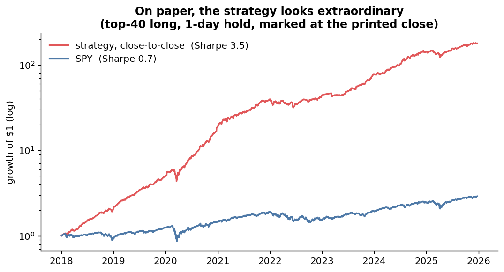
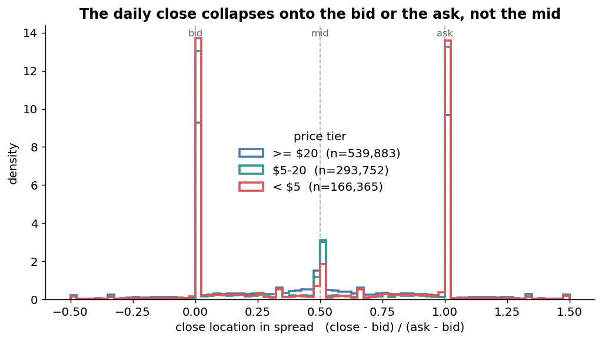
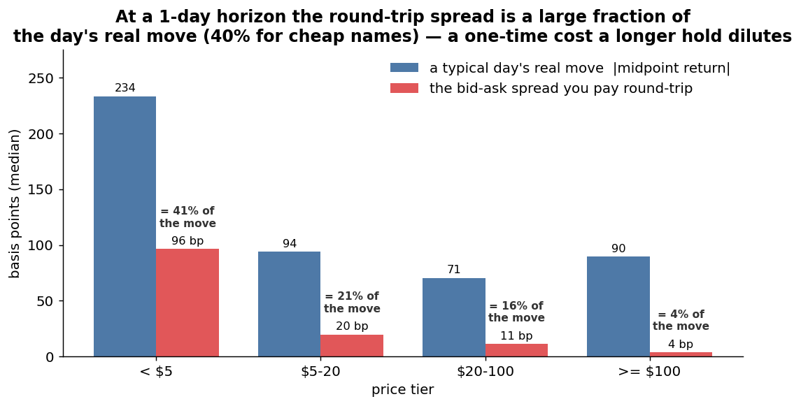
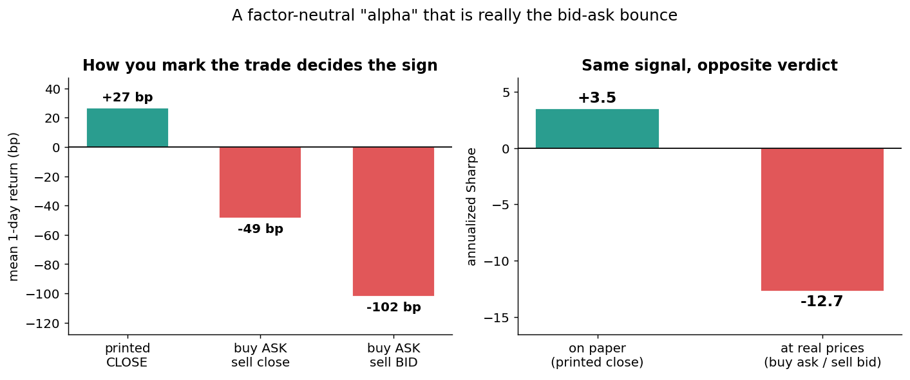
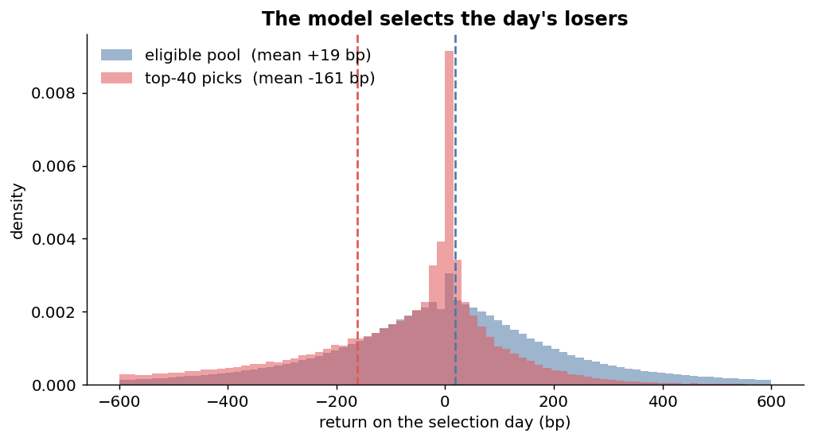
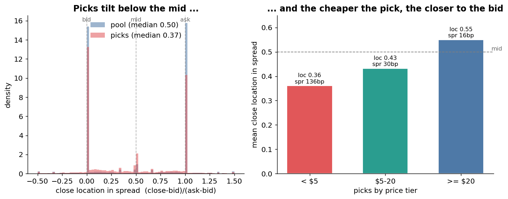
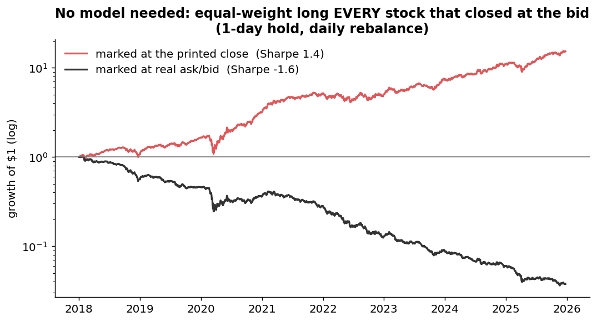
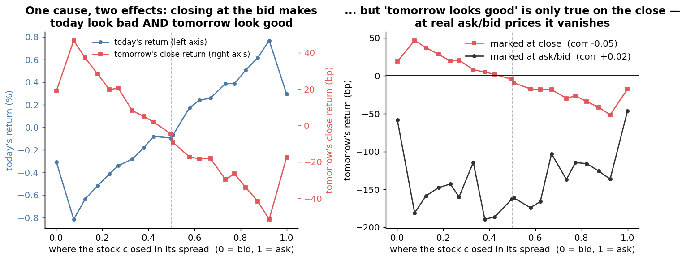
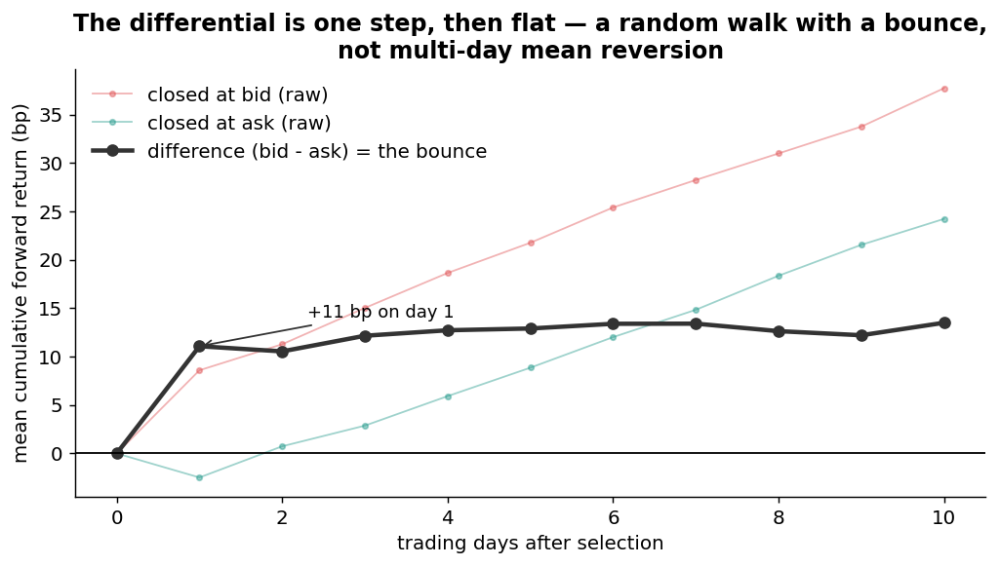

Bid-ask bounce masquerading as factor-neutral alpha
A post-mortem of a short-horizon factor-neutral selection model whose backtested Sharpe of 3.5 turned out to be the bid-ask bounce.
1. Introduction
I wanted a market-neutral equity sleeve — something whose returns were uncorrelated with the index, so I could stack it on top of a long book without adding beta. The plan was straightforward and, at the time, felt principled:
- Start from the Fama-French factors, but build them out of tradeable instruments so that the "residual" I isolate is the P&L of a hedge I could actually put on.
- For every stock, every day, estimate its factor exposures and strip them out, leaving a factor-neutral residual return I'll call its alpha.
- Train a model to predict which stocks will have high forward residual alpha, and hold the top of that ranking each day.
This post walks through what I built, the backtest numbers it produced, and — because those numbers were too good — what happened when I looked at where the return was actually coming from. I'm writing it in the order the investigation actually unfolded.
2. Background
2.1 Fama-French factors and residual alpha
The Fama-French program decomposes a stock's return into systematic factor exposures plus an idiosyncratic residual:
\[r_{i,t} = \alpha_i + \sum_k \beta_{i,k}\, f_{k,t} + \varepsilon_{i,t}.\]
The classic factors are the market (CAPM), then size and value (Fama-French three-factor), then momentum (Carhart), and later profitability and investment (the five-factor model). Once you regress a stock on the factors, the part that isn't explained — the residual \(\varepsilon_{i,t}\) — is what practitioners loosely call "alpha": the return you earned that the known risk premia don't account for. A market-neutral book tries to hold residual alpha while netting out the \(\beta_{i,k} f_{k,t}\) terms.
2.2 From academic factors to a tradeable risk model
The academic factors are long-short paper portfolios. If I hedge against them, I can't actually trade the hedge. So I replaced the main factors with tradeable proxies — an ETF or an ETF spread — and added a few risk controls the classic set leaves out. The result is a seven-factor daily model:
| factor | instrument (proxy) | what it controls for |
|---|---|---|
| market | SPY | broad market beta |
| sector | the stock's own SPDR sector ETF, market-hedged (\(s - b\cdot\text{MKT}\)) | industry beta |
| rates | IEF | duration / rate sensitivity |
| USD | UUP | dollar sensitivity |
| size | IWM − IWB | small-minus-large |
| value | IWD − IWF | value-minus-growth |
| momentum | MTUM | momentum |
The point of using tradeable legs is that the residual is no longer an abstraction: it is (to first order) the return of a book that is long the stock and short a basket of ETFs in the estimated exposure ratios. That is a position I could actually hold, so if the residual carries alpha, it's alpha I could actually harvest. Tradeability, in other words, was baked in at the factor level from the start — which makes the punchline of this post more embarrassing, not less.
3. Data and methodology
3.1 Data
CRSP daily stock file, 2000–2025: roughly 50M security-days. The fields that matter here are the daily return DlyRet, the closing price DlyPrc, the open DlyOpen, and the closing quote DlyBid / DlyAsk.
3.2 Factor construction and rolling betas
I build the seven daily factor-return series, then for every stock estimate its betas on a trailing one-year window (252 days, minimum 126) with a ridge penalty (\(\lambda = 0.10\)) on the correlation-scaled system, refreshed every trading day. Subtracting the fitted factor return from the raw return gives the stock's daily residual alpha — the hedge P&L.
3.3 Tradeable universe
Common US stocks only: share type NS, US-incorporated, CORP/REIT issuers. ETFs, funds, and ADRs are excluded. A loose liquidity gate (at least $1M of daily dollar volume, or an unusual volume or price spike) drops only the most illiquid names.
3.4 Label
For each stock-day I sum the next few days of factor-neutral residual alpha into a forward label. In the model this post is about, the horizon was 5 trading days — a deliberately short horizon, since I was after fast-mean-reverting residual mispricings.
3.5 Features
Each training sample is the trailing 120-day sequence of the stock's own residual alpha and its log dollar volume. So the model sees a stock's recent idiosyncratic-return path and its liquidity, and nothing else.
3.6 Model and selection
A GRU (hidden size 128, two layers) is trained as a top-vs-bottom classifier: each day the top 20% of names by forward residual alpha are positives, the bottom 20% negatives, and the model learns to separate them. Everything is walk-forward — out-of-sample years 2018–2025, retraining on the prior five years and rolling forward. In the backtest the rule is simple: each day, score every eligible stock, and hold the top K = 40 long-only, rebalancing daily.
4. The backtest looked excellent
On a close-to-close basis the numbers were the kind you don't quite believe. The plain 1-day-hold, daily-rebalanced top-40 book compounds $1 into roughly $180 over eight out-of-sample years — an annualized Sharpe of 3.5, against 0.7 for SPY over the same window (a triple-barrier hold with take-profit / stop-loss lands in the same range). The daily information coefficient is small but stable and positive.

A Sharpe of 3.5 is, if real, extremely valuable. So before getting excited I went looking for where the return actually came from. The first place to look was the price series itself.
5. A detour into CRSP prices
Two facts about the CRSP daily file matter for anything measured at the daily close.
The return is built from the closing price plus dividends. DlyRet is a total return, but the price it uses is DlyPrc.
DlyPrc is, almost always, the last trade of the day. It is not the midpoint of the closing quote — it's whatever price the final transaction printed at. And a transaction prints where it crosses the book: at the bid if it was a sell, at the ask if it was a buy. For a liquid name with a penny-wide market, the last trade usually sits on the bid or on the ask, almost never at the middle.
You can see this directly. If I locate each day's close within its own closing spread —
\[\text{loc} = \frac{\text{close} - \text{bid}}{\text{ask} - \text{bid}},\]
— a value of 0 means the close printed at the bid, 1 means at the ask, 0.5 at the mid. If the close were the fair value itself, the midpoint, loc would cluster around 0.5. It does not:

loc = (close − bid) / (ask − bid), by price tier. The mass piles up at 0 and 1 — the close collapses onto the bid or the ask — rather than at the mid.Because the close is a last trade that lands on the bid or the ask more or less at random, the closing price carries a \(\pm\tfrac{1}{2}\text{spread}\) jitter on top of fair value. The obvious question is how big that jitter is next to a real day's move. If I compare the round-trip spread you'd actually pay against the size of a typical daily move (measured on the bounce-free midpoint), the spread turns out to be a large fraction of a single day's move — about 40% for sub-$5 names — and only becomes negligible for the most expensive, liquid names:

That is the crux. Over a single day, the spread you pay is comparable to the move you're trying to capture — so a daily-rebalanced signal priced off the close is competing, one-for-one, with the bounce. Over a twenty-day hold the real move keeps growing while the spread is paid only once, which is exactly why the fix in §8 lengthens the horizon. With that in mind, the smoking gun.
6. Where the return actually came from
6.1 The edge lives entirely overnight
If the return came from the closing print itself, it should show up almost entirely in the overnight gap right after that print. I split each 1-day return into the overnight leg (\(\text{close}_t \to \text{open}_{t+1}\)) and the intraday leg (\(\text{open}_{t+1} \to \text{close}_{t+1}\)):
| leg | mean return | annualized Sharpe |
|---|---|---|
overnight close → open |
+24 bp | +5.8 |
intraday open → close |
−2 bp | −0.3 |
Essentially all of the edge is in the overnight gap the night I rebalance; the intraday leg is, if anything, slightly negative. That means the edge is only available if you fill at the closing print itself — enter at the next open instead and it's gone. A short-horizon edge that lives entirely in one overnight jump is the first sign something is wrong.
6.2 Paying the ask inverts the sign
The decisive test. DlyPrc is the last trade, but I don't get to transact at the last trade — I pay the ask to buy and receive the bid to sell. CRSP carries the closing quote, so I can re-mark the same holdings at the prices I'd actually fill at:
| accounting | mean 1-day return | annualized Sharpe |
|---|---|---|
| printed close | +27 bp | +3.5 |
| buy at ask, sell at close | −49 bp | −6.6 |
| buy at ask, sell at bid | −102 bp | −12.7 |

The entire edge is not just erased but reversed. The 129 bp swing from the printed close to a real round trip is, by construction, the round-trip spread the book actually pays — and that it exceeds the whole close-price edge is the tell that the selection is the problem. The signal is preferentially picking names that closed near the bid — a depressed close makes the forward residual look large and positive — so the "overnight gain" is just those closes bouncing back up across the very spread you must cross to get in.
6.3 What the model selects
Start with the day it makes its choice. The picks lean toward that day's losers: they close down about 161 bp on the selection day, against +19 bp for the eligible pool. A depressed residual looks like a large positive forward alpha, so the model reaches for the names that just fell.

A name can fall on the day and still close anywhere in its spread, so the next question is where in the spread the picks close. They lean toward the bid — a median location of 0.37 versus 0.50 for the pool — and the lean is sharply stronger the cheaper (and wider-spread) the name: sub-$5 picks close at a mean location of 0.36 with a 136 bp spread, while $20+ picks close roughly at the mid with a 16 bp spread.

Put those two facts together — the picks are cheap, wide-spread names that closed low in their spread — and it turns out you don't need a model to collect what follows. Throw the GRU away and just equal-weight long every eligible stock that closed at the bid, rebalanced daily. On the printed close that blunt rule compounds $1 into $16 at a Sharpe of 1.4. The model's Sharpe-3.5 book looks like a sharper version of the same trade, concentrated in the cheapest, widest-spread names, where the effect is biggest.

Marked at real ask/bid, that same blind rule bleeds steadily downward — the first hint of what is really going on, which §6.4 makes precise and §7 explains.
6.4 Why the model learned the bid
Strip the model down and its edge reduces to a single instruction: buy today's losers. On a close-price backtest that instruction pays — but not because beaten-down stocks rebound. It pays because "today's loser" and "tomorrow's winner" are the same fact read twice. The whole causal chain fits on one page:
flowchart TB
C(["Stock closes at the BID<br/>(low in its own spread)"]):::cause
C --> T["Today's return looks LOW"]
C --> N["Tomorrow's close: a fresh bid/ask coin flip<br/>(recovers half a spread on average)"]
T --> L["tagged: today's loser"]
N --> W["tagged: tomorrow's winner<br/>(printed close only)"]
L --> MIR["'losers rebound':<br/>one bounce counted twice,<br/>NOT mean reversion"]:::key
W --> MIR
R["Real residual alpha is below the spread,<br/>so the bounce is the biggest<br/>signal in a close-based label"]:::faint
R -.-> MOD
MIR --> MOD["Model learns:<br/>buy the bid-closers"]
MOD --> OK["On the printed close:<br/>Sharpe 3.5"]:::good
MOD --> NO["Buy ask / sell bid:<br/>spread paid, edge gone"]:::bad
classDef cause fill:#e15759,stroke:#b03a3c,color:#fff;
classDef key fill:#f4d06f,stroke:#c9a227,color:#000;
classDef good fill:#2a9d8f,stroke:#1f7a6e,color:#fff;
classDef bad fill:#8d99ae,stroke:#333,color:#fff;
classDef faint fill:#f3f3f3,stroke:#bbb,color:#333;The fact is where the stock closed in its spread. A name that closed at the bid did two things at once: it printed a low close, which drags today's return down, and it left itself half a spread of room to hop back up, which lifts tomorrow's close return. Sort every stock-day by that closing location and the two returns are mirror images — today's return climbs from bid to ask while tomorrow's close return falls (left panel). Neither is information. They are one microstructure state — the bid — showing up as a loss today and a "gain" tomorrow. This is why the label the model trains on (a forward residual alpha built from closing prices) is negatively related to the day's own return: not mean reversion, but a single bounce counted at both ends.

Two things make this a trap rather than a strategy. First, it is purely a close-price effect: re-mark tomorrow at real ask/bid (right panel) and the bid-to-ask slope collapses — the correlation between the closing location and tomorrow's return goes from about −0.05 on the close to roughly zero at ask/bid, and every bucket sits in the red because you have paid the spread to get in. Second, the genuine alpha underneath is tiny: the per-name effect is a few basis points, smaller than the spread itself, so in a label built from closing prices the bounce is simply the largest predictable signal on offer. A learner minimizing error on that label has nothing better to find. It doesn't rediscover mean reversion; it rediscovers the bid — and, as in §6.3, it sharpens the thin, universe-wide bounce into a Sharpe-3.5 book by crowding into the cheap, wide-spread names where the half-spread is biggest.
7. Random walk, not mean reversion
§6.4 showed the pattern; it's worth being exact about the process behind it, because the two stories on offer — mean reversion and a random walk — are indistinguishable for a single day and opposite thereafter. Write the observed close as an efficient price plus the bounce:
\[\text{close}_t = P_t + s_t \cdot \tfrac{1}{2}\text{spread}, \qquad s_t = \pm 1 \ \text{at random}.\]
\(P_t\) is the midpoint, the fair price, and it is a random walk: its expected next change is zero, it has no memory, nothing pulls it back toward where it has been. The only quantity that "reverts" is \(s_t\) — which side of the spread the last trade happened to print on — and it reverts only because it is mean-zero noise.
Now condition on exactly what the signal keys on. Buying a name that closed at the bid means conditioning on \(s_t = -1\). Its expected next close is
\[\mathbb{E}[\text{close}_{t+1} \mid s_t=-1] = \underbrace{\mathbb{E}[P_{t+1}]}_{=\,P_t} + \tfrac{1}{2}\text{spread}\cdot\underbrace{\mathbb{E}[s_{t+1}]}_{=\,0} = \text{close}_t + \tfrac{1}{2}\text{spread}.\]
The close is expected to rise by half a spread — but read the algebra before calling it mean reversion, and note expected is doing real work. \(\mathbb{E}[P_{t+1}] = P_t\): the fair price is going nowhere. The whole expected "gain" is the bounce term \(-s_t\cdot\tfrac12\text{spread}\), and it is an average over tomorrow's coin flip, not a move any single stock makes. Tomorrow's last trade prints at the bid or the ask with equal odds, so measured from today's bid close the recovery is either nothing or a full spread — half a spread is only the mean of those two outcomes. Nothing pulls the price up; I have sorted on the down-draw of a coin and am watching mean-zero noise revert, in expectation, to its mean. This is the formal version of §6.4's mirror image: the loss today and the "gain" tomorrow are the same draw \(s_t\) read with two signs.
That distinction is testable, and the test is decisive because the two processes diverge after day one. Genuine mean reversion of \(P\) pulls proportionally to how far the price has strayed and keeps pulling for several days — a slow, multi-day decay. The bounce does the opposite: it is one step, capped at the spread no matter how dislocated the residual looks, and finished by the next bar. Tracing the forward path of bid-closers against ask-closers shows precisely the bounce's fingerprint — the gap opens entirely on day one and then goes flat, a random walk that took a single, already-known step:

And the arithmetic is merciless: the bounce you expect from a bid close only brings the price back to the mid, and buying at the ask puts you half a spread above the mid. The expected gain is minus half a spread before you have even sold, and minus a full spread once you sell at the bid. For anyone who has to cross the spread, capturing the bounce isn't hard, it's impossible.
8. Fixing it at the source
Once it was clear the edge was the bounce, the question was whether any real residual alpha survived underneath it. I attacked it at the source with two changes:
- Lengthen the horizon from 5 to 20 days, so a one-bar microstructure artifact is diluted by real holding-period return.
- Make the label itself tradeable — define the forward alpha as buy at the closing ask on day \(t\), sell at the closing bid on day \(t+20\), folding the round-trip spread directly into the training target so the model is rewarded only for alpha that survives the spread.
Retraining on this label did remove the bounce. The realized round-trip spread of the top-40 book fell from 134 bp (the old model, hunting near-bid names) to 14 bp (tight, liquid names), and marking at real ask/bid no longer flipped the sign. But the honest result was thin: long-only Sharpe around +0.18, and hedged, around 0. Averaged across all names, the 20-day tradeable alpha went from +33 bp on close accounting to −1.4 bp once the spread was charged. The pipeline was now honest — and honestly, this model found very little factor-neutral alpha after real costs.
9. Takeaways
The one that generalizes: mark every equity backtest at the prices you'd actually transact at — buy at the ask, sell at the bid — from day one. The printed close is a last trade that bounces inside the spread, and any short-horizon or reversal-flavored signal will select for names sitting near the bid and manufacture an overnight return that evaporates the moment you pay the real ask.
Concretely, the screen I now run on any short-horizon price signal:
- Split the forward return into overnight and intraday. Edge living entirely in the first overnight leg is a red flag.
- Re-mark the entry at the ask. If the edge shrinks a little, maybe it's real; if it inverts, it's most likely the bounce.
- Check price and liquidity sensitivity. Edge that grows as the price floor drops and the spread widens is the classic sign of a microstructure artifact.
And the intuition to keep: at the daily close you are looking at a random walk with a bounce, not a mean-reverting price. The escape from the bounce is slower and more liquid, not faster and higher-frequency.
Reproduction notes
- Data: CRSP daily stock file (
DlyPrc/DlyRet/DlyOpen/DlyBid/DlyAsk). - Factor model: 7 tradeable factors (§2.2), rolling 252-day ridge betas (\(\lambda=0.10\)), residual alpha = raw − β·f.
- Model: GRU 128×2, top-vs-bottom BCE on the 5-day forward residual-alpha label, walk-forward OOS 2018–2025, top-K=40 long-only daily.
- Ask/bid accounting:
coa = min(close/ask, 1),boc = min(bid/close, 1), round-trip mark(1+ret)·boc'·coa − 1. - Fixed model: 20-day horizon + ask/bid-corrected label.
All figures were computed for this post from the CRSP daily file and the model's out-of-sample scores.